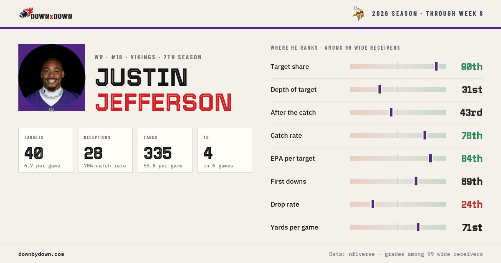

P.Mahomes pass short left to E.Johnson for 73 yards, TOUCHDOWN
+7.02 EPA · Chiefs vs Broncos, Q2 7:54
Down by Down charts every play of every game from public play-by-play: where each team throws and runs, how every offense matches up against every defense, and what it all means for the players you start. Free, no account, updated three times a day.
 Ja'Marr ChaseWR · Bengals · most targets in week 8
Ja'Marr ChaseWR · Bengals · most targets in week 8caught incomplete touchdown His page
block: hero-map
block: games type=grid
14,784 snaps charted this season · 120 games · 576 players · 32 offenses and defenses block: counts
+7.02 EPA · Chiefs vs Broncos, Q2 7:54
+46% win probability for the Cardinals, Q4 0:10
Wildest game Bengals 43, Titans 36 in overtime
Bengals 43, Titans 36 in overtime
block: week-highlights · from the week in review
Every game puts one offense against the other defense, metric by metric. You get the biggest edge, the opening it can attack and what to watch, in plain sentences with the ranks behind them.
This week's matchupsGame of the week · Monday 8:15 PM ET · Lumen Field
 Bears5-2at
Bears5-2at Seahawks4-3
Seahawks4-3SEA −3 · O/U 46.5
Biggest edgeBears give up 149 yards a game to wide receivers (19th), against a league average of 147. Seahawks' wide receivers produce 185 (4th).
Open the matchupblock: matchup · the live hub's game of the week
Where the ball finds him, how he grades against his position, how his weeks are trending and who he faces next. Receivers, backs, tight ends and quarterbacks, with a page each.
Find a player
Rising this week · share of targets
block: player-card block: movers
Standard, half and full PPR, with the matchup behind every number: which defenses give up the most to each position, and who on your lineup draws them. Build your lineup once and the site keeps it.
Build My teamPPR points, season leaders
block: fantasy block: leaders type=ppr
wide receivers, share of team targets
wide receivers, value added per look
quarterbacks, sacks and scrambles included
block: leaders
block: teams · each opens the team page
The upsets, the comebacks, the plays that swung each game and who moved, in one short email after every week. Written from the same data as the site. Free; unsubscribe anytime.
Divi Email Optin · RSS-to-email from /feed/week-in-review/
Week 8 in review
The swing: G.Minshew pass short middle to Mi.Wilson for 13 yards, TOUCHDOWN. (Q4 0:10, +46%).
The play: P.Mahomes pass short left to E.Johnson for 73 yards, TOUCHDOWN (+7.02 EPA).
Rising: Chris Godwin Jr., Colston Loveland, CeeDee Lamb saw their target share jump.
Read the full weekExpected points added: how much a play changed a team's expected score, given the down, distance and field position. A 6-yard gain on 3rd and 5 is worth more than on 3rd and 15. It is the fairest single number for comparing plays.
Public play-by-play from nflverse, the open NFL data project, plus their weekly player stats, snap counts and injury reports. Nothing is scraped from paid services.
Three times a day during the season. Most games are charted within hours of the final whistle; player stat lines follow when nflverse posts them.
Yes. No account, no paywall, no ads.
No. Down by Down shows how teams and players actually play and how matchups line up. What you do with that is up to you.
Yes. Every finished season is kept as it ended, starting with 2025: its teams, players, games and the playoffs.
FAQPage structured data from the plugin
Touchdown
Free, updated three times a day, built on public data.